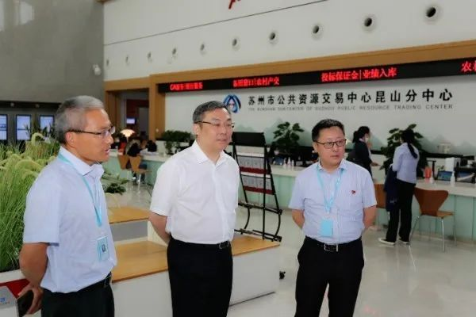
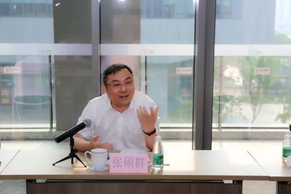

【信息发布时间：2020-07-09阅读次数：】 【我要打印】 【关闭】
 会前，张硕群副局长牵头，谢伟处长、张彬副主任等 6人对昆山分中心进行考察调研，实地参观了昆山分中心的服务大厅、开评标室、监控室及办公区等场地建设，并观摩了政府采购项目远程“不见面”开标情况。张硕群副局长对昆山分中心的场地建设、信息化建设和制度建设给予了充分肯定。 在公共资源交易工整合共享业务交流会上，各分中心就各地公共资源交易平台整合共享工作的推进、政府采购集采机构的设立、电子保函建设情况、信息化建设、农村工程建设项目招投标事宜进行了汇报，大家畅所欲言，纷纷提出了遇到的问题和建议。  张硕群副局长表示，通过这次交流，大家谈谈心得，相互学习，集思广益。同时他强调，我们的工作就是以深化平台整合共享为抓手，努力创造公平高效的交易平台。一要加强行政体制建设。进一步理顺和明确市级交易中心体制，研究探索双重管理新办法，统一交易中心人员、编制、机构、预算和系统。二要上下协同。市级中心和分中心要“统分结合”，有统有分、有主有次，主干方向要统一，市级中心主要是规范管理，分中心要积极创新，突出自己的特色、亮点。